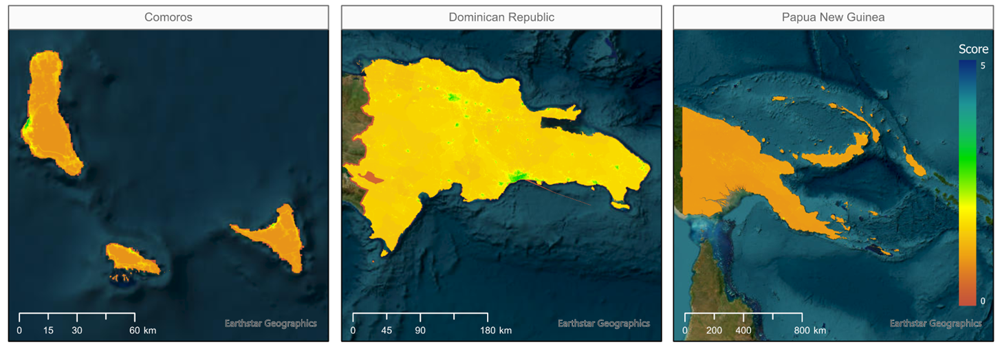

GEEST - Assessing women’s employment opportunities#
For complete project information, please click here
With support from the Canada Clean Energy and Forest Climate Facility (CCEFCFy), the Geospatial Operational Support Team (GOST, DECSC) launched the project “Geospatial Assessment of Women Employment and Business Opportunities in the Renewable Energy Sector.” The project proposes a novel methodology for mapping the enabling environments for women’s employmenty. The goal is to inform new energy projects in client countries to support the advancement of women’s economic empowerment while contributing to closing gender gaps in employment in the RE sector.
In addition to the methodology, the project has generated an geospatial open-source, QGIS tool for implementing the methodology. For more details, visit the GEEST project directly.
Countries included in the project:
AFRICA |
LATIN AMERICA AND CARIBBEAN |
EAST ASIA AND PACIFIC |
SOUTH ASIA |
|---|---|---|---|
Cabo Verde |
Antigua and Barbuda |
Federated States of Micronesia |
Maldives |
Comoros |
Belize |
Fiji |
|
Guinea-Bissau |
Dominica |
Kiribati |
|
Mauritius |
Dominican Republic |
Marshall Islands |
|
São Tomé and Príncipe |
Grenada |
Nauru |
|
Guyana |
Niue |
||
Haiti |
Palau |
||
Jamaica |
Papua New Guinea |
||
St. Lucia |
Samoa |
||
St. Vincent and Grenadines |
Solomon Islands |
||
Suriname |
Timor-Leste |
||
Tonga |
|||
Tuvalu |
|||
Vanuatu |